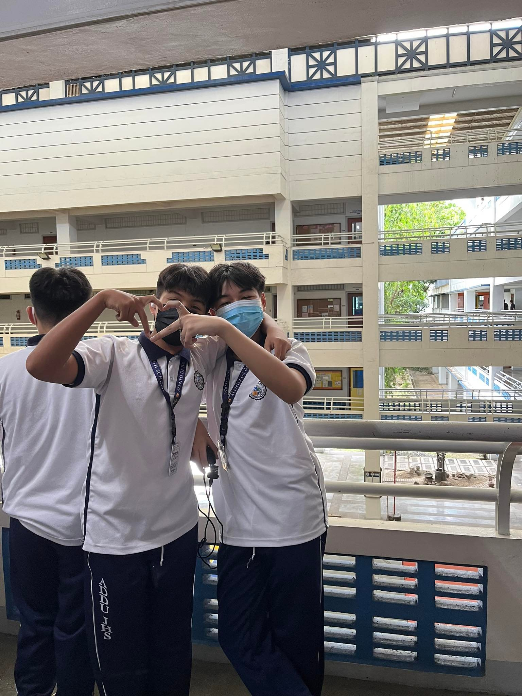

The Significance of the Study
 The important data we gathered about the Badjao Community is that they are facing poverty and discrimination. This affects their daily life and health as they are not able to buy food and other supplies needed, and cannot afford to go to school. As well as being discriminated against by other people. By gathering further Information about their culture, livelihood, and the problems in their daily life. Through this, we gathered pieces of information about their lack of needs in their daily life. After that, we found out that they are in a crisis where they can’t afford to buy food and other supply needs even going to school and health examinations due to a lack of money. As we further gathered this information, we were able to connect the pieces of information about the Badjao Community. We find it essential since the data holds the information about Badjao Community and the issues/problems they have encountered. Furthermore, as we continue this research, we can use this data in making decisions and in planning what we will do to support the Badjao Community
The important data we gathered about the Badjao Community is that they are facing poverty and discrimination. This affects their daily life and health as they are not able to buy food and other supplies needed, and cannot afford to go to school. As well as being discriminated against by other people. By gathering further Information about their culture, livelihood, and the problems in their daily life. Through this, we gathered pieces of information about their lack of needs in their daily life. After that, we found out that they are in a crisis where they can’t afford to buy food and other supply needs even going to school and health examinations due to a lack of money. As we further gathered this information, we were able to connect the pieces of information about the Badjao Community. We find it essential since the data holds the information about Badjao Community and the issues/problems they have encountered. Furthermore, as we continue this research, we can use this data in making decisions and in planning what we will do to support the Badjao Community
The Specific objectives of the project include:
•Educate Them About How To Deal With Poverty And Descrimination
•Provide them with Financial Support
•Raise Awareness
•The primary outcome is that the communities will be given basic needs like food, money, clothes, and shelter.
•There will be an Education program where the badjao people will be taught important lessons.
•Health check-ups will be held once a week, to check the badjao people's health and give them medicine/vitamins for treatment.
•There will be a fundraising activity online where kind-hearted people can donate money to the badjao community.
•Donation of Supply needs for 700 community members
•Education/Learning Program
•Health Check-ups
•Fundraising Activity Online
The Three Phases of our Project

Phase One:
In the first phase, the project's success can be seen when the education programs for the Badjao community are implemented. We can measure their knowledge through evaluations, tests, or assessments. We also have to evaluate their knowledge before and after the education to see their advancement in their general knowledge and to see if the education programs were successful.
Phase Two:
In the second phase, we evaluate the results we have gathered from the education programs that we have implemented. Based on the assessments and observations we have made we can surely help them with the things they have a problem encountering. Just like talking to other people, learning English, and so on, so that we can improve their communication skills with other people. This phase is very important since the Badjao People have a hard time communicating with other people, that's why most of the Badjao People don't have access to good jobs and are being discriminated against because of the language they speak.
Phase Three:
Lastly, in the third phase, we now will implement our project implementations to the Badjao Community. When I talk about our project implementations it means we will now do what we promised to do for the Badjao people like community clean-ups, donating food and offering services, family planning, health check-ups, and a fundraising activity we have planned. We hope that we can successfully do these projects we have planned because the project we came up with will surely help the Badjao families go through life with no hardships. We also planned the timeline for all of these projects, we hope that we can finish these projects in about 5 months.
Filipino
Sa Aming Palagay, Ang Problema Ng Kahirapan At Diskriminasyon Ay Dapat Ayusin. Kung Maayos ang problema na ito mababago ang pananaw ng lahat tungkol sa mga Badjao. Ang isang napapanahong isyu na kinakaharap ng ating kasosyong komunidad ay ang diskriminasyon at kahirapan. Ito ang dalawa sa pinakakaraniwang isyu sa komunidad ng Badjao. Karamihan sa mga tao ay nakikita ang komunidad ng Badjao bilang mga tamad at mahirap dahil wala silang trabaho o anumang pagkain na makakain. Nangangahulugan ito na dahil sa ilang mga tao na naglalarawan sa mga Badjao na naiiba ito ay nakakaapekto at nakakaimpluwensya sa iba na mag-isip sa parehong paraan. Kung Hindi ito Sosolusyunan hindi magbabago ang pananaw ng mga tao sa mga Badjao kaya dapat masolusyunan ang problema nila na Kahirapan at diskriminasyon.

About the Web Designers
Mark Is A Nice But Goofy Person. He is Usually A Person Who Loves Talking, Playing Any Competitive Things And Loves Listening To Music. Most Of His Favorite Songs Are The Songs of the Late Great Juice WRLD….He Also Loves Playing Videogames. Some Of His Favorites Are GTA San Andreas, Minecraft, NBA2k, Marvel`s Spiderman 2018 and many more. He Is tall and a Handsome human being. He is really grateful for his groupmates specifically Andres Guarin, Rodel Calape Saliot, Jed Edillon And Zach Espolong.

Andres is a nice and kind person. He sees goodness in everyone and tries to make new friends every day. He likes to play football, watch movies and play video games. He wishes everyone a good and healthy life. He always asks God for help when he needs it most. He can sometimes be goofy.
Jed is a talkative and social person. He likes a lot of food especially sushi and chicken. He loves playing video games on phone and pc. He like watching moviezs and TV series.